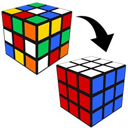
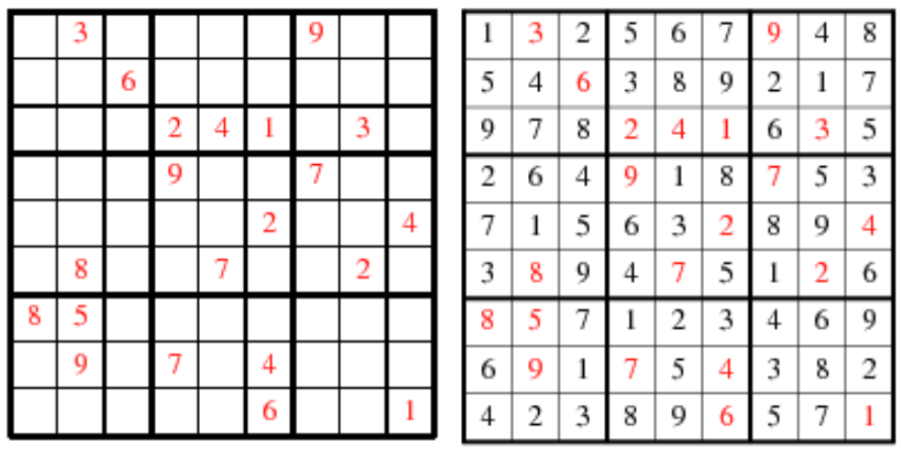
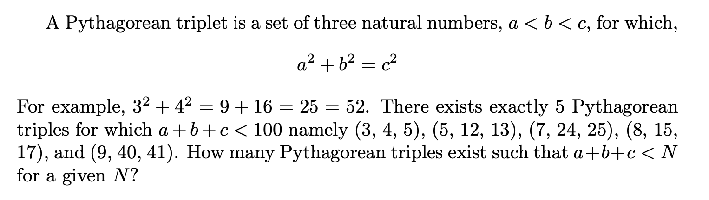

What are computational problems?
A problem usually presents itself in the form a question. There may be problems that cannot be articulated in the form questions, but we don't care for them. The following are some problems, that I am sure all of us can understand immediately:
What is the meaning of life?
What is truth? What is perception?
Does the tatoo look good on me?
Does my dog love me?
How many of your Facebook friends are younger than you?
What is the cheapest air ticket to Tokyo this week?
Given a positive integer n, what is the nth prime number?
Does the polynomial
have a real solution?
What will be the temperature in Hyderabad on 21 May 2032?
The questions that are highlighted in the above list have something in common: they can all be solved by writing computer programs; and it is not the case with the others. Problems that can be solved by writing computer programs may straight away be called the computational problems. A more precise description would be as follows:
A problem qualifies as a computational problem when it satisfies the following properties:
The problem statement should be absolutely unambiguous.
Questions such as Does my dog love me? and What is the meaning of life? do not qualify because they are ambiguous[1].
The problem should have a well defined and finite input.
Questions such as What will be the temperature in Hyderabad next year today? may probably be answered if you know every minute detail about atmosphere of the entire planet, the factors that influence it, and the laws that govern them. But it is practically impossible to handle such huge amounts of data and to ensure the answer is correct.
The problem should expect a well defined and finite output.
If the answer to a question is not understandable, or if it is too huge to process in one life time, such questions are deemed to be useless and we don't adddress them.
The problem should be solvable by running a program on a realistic computer.
Since computers are physical devices, they should always obey the laws of physics and only possess realistic abilities. For instance, we cannot assume the existence of computers that can travel back in time. Eg:How many times did it rain during the bronze age exactly?
[1]
Terms such as love and meaning are too vague for a machine to define quantitatively.
Some examples of computational problems
Solving a Rubik's cube is certainly a computational problem for we know there exist robots that can do it.

But before you want to write a program that can solve a cube, you have to have to decide how you plan to represent the cube. You cannot obviously be forcing the physical cube into the computer screen and expect it not to break 😁! Is your program expecting an image of the cube? Or does it work a textual representation of the cube? Checkout this discussion for instance: How would you represent a Rubik's Cube in code?. If your program works on an image, this clearly means your getting into a zone where you may need to use libraries (libraries are just well-tested already written by people). If your program only uses textas the input and output, we say it just uses standard input and output.
Likewise, solving a Sudoku puzzle is also a computational problem because we know that there are programs that do it very fast.

Do note that Sudoku puzzle with less than 17 initial entries does not have a unique solution! You have to study such background details before jumping into solving problems. (Check this:Mathematicians Solve Minimum Sudoku Problem)
The following is a very typical (and simple) computational problem.

In here, the input is N and the output is the no. of triples - both are positive integers. Unlike in the case of Rubik's cube and Sudoku, the input and output themselves are not sophisticated. The sophistication lies in coming up with a quick way of finding all the triples whose sum is less than N particularly when the N is very large (eg: N = 100000000000). These are typically the kind of questions that you find in most of the coding competitions.
have a real solution?